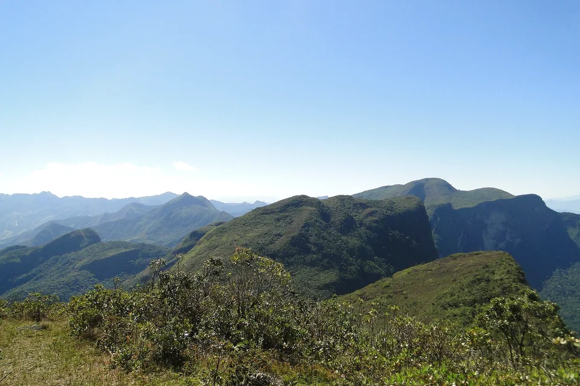
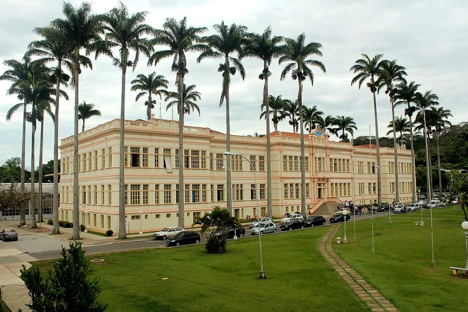

← Voltar ao site UFVAI / Back to UFVAI
Créditos das imagens
O hero da v4 combina duas fotografias reais e independentes: uma paisagem de Minas Gerais e o edifício principal da UFV. As névoas e o movimento são efeitos de apresentação em CSS/JavaScript; a paisagem não é apresentada como uma fotografia do campus.
English: The v4 hero uses two separate real photographs: a Minas Gerais landscape and the UFV main building. Mist and motion are presentation effects. The mountain photograph is not represented as a view of the UFV campus.
1. Serra dos Arrepiados · Serra do Brigadeiro, Minas Gerais

Obra original: Serra dos Arrepiados.JPG, Wikimedia Commons.
Autora: Liana Amin Lima.
Licença: Creative Commons Atribuição–CompartilhaIgual 3.0 (CC BY-SA 3.0).
Adaptações locais: ajuste de saturação e contraste, compressão em WebP/JPEG, recorte responsivo por CSS e sobreposição de gradientes/névoa. Os arquivos derivados desta fotografia são disponibilizados sob a mesma licença CC BY-SA 3.0.
2. Edifício Arthur Bernardes · Universidade Federal de Viçosa

Obra original: Universidade Federal de Viçosa — Prédio principal, 2015.jpg, Wikimedia Commons.
Autor: Mateus S. Figueiredo.
Licença: Creative Commons Atribuição–CompartilhaIgual 4.0 Internacional (CC BY-SA 4.0).
Adaptações locais: redimensionamento, compressão WebP e recorte de apresentação por CSS. O arquivo derivado desta fotografia é disponibilizado sob a mesma licença CC BY-SA 4.0.